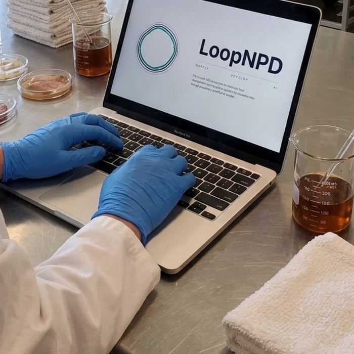

2026 –
Founder, LoopNPD
Software that puts ingredient sourcing inside the R&D workflow.
Launch app →- Founded a software company addressing the technical sales support gap at small and mid-sized food companies; the product integrates technical ingredient sales into the R&D process so developers can find ingredient solutions faster
- Own product strategy and roadmap, and write database-driven product specifications translating R&D workflow problems into precise engineering requirements
- Lead marketing, positioning, and sales: brand and messaging, the company website and LinkedIn presence, and direct outreach and discovery with food developers and ingredient suppliers